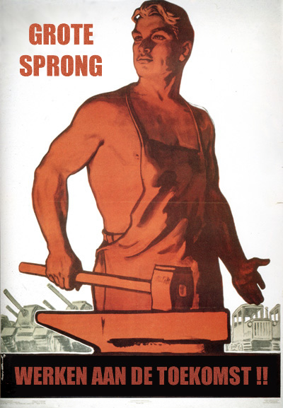

1200 width
Section, Main, footer and navigation all have a width of 1200px maximum. To make everything one block, the section has been given the same background color as the article.

Section, Main, footer and navigation all have a width of 1200px maximum. To make everything one block, the section has been given the same background color as the article.
SECTION element with a centered ARTICLE element inside. Standard way of building blocks. ARTICLE will take care of equal content width everywhere.
PUT ALL CONTENT WITHIN THE ARTICLE BLOCK
MARGINS AND PADDINGS ARE TAKING CARE OF
Use background colors or background images to layout the blocks...
Also known as CSS varibles. Set all the variables for fonts, colors, widths ect in the top of the CSS file.
All the custom properties are implemented in the code as CSS atribute selectors, using the data- prefix. Why not using classes?
Attribute selectors can be easy manupilated with Javascript.
Any kind of stuff that makes life easier. From two-column gadget to video player.
Look at the block at the top of the page: Text on the left side, image on the right. It can be achieved bij adding an attribute selector to an article within a section: data-gs-twocol. On smaller screens, the columns will dissapear and the content will be stacked.